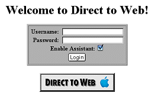
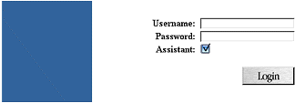
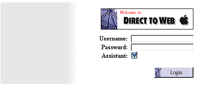
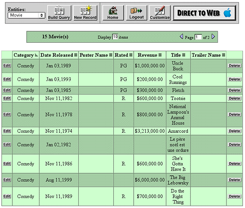
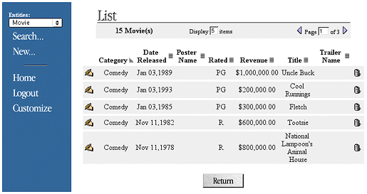
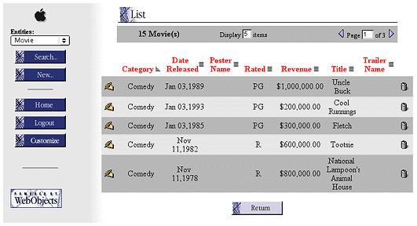

| PATH |

To create a Direct to Web application, begin by using Project Builder to create a WebObjects application project. Follow these steps:
Enter D2WTutorial in
the Project Name field.
Click Set and select a location for your project.
No additional frameworks are required for this tutorial, so click Next.
You'll use one of the models defined in the sample projects.
Click Add.
Navigate to the /Developer/Examples/JavaWebObjects/JavaClient/JavaClientMovies directory.
Select Movies.eomodeld and click Choose.
Click Next.
This pane offers a selection of user-interface styles ("looks") for your Direct to Web application; see "The Different Looks for WebObjects Applications" for more information.
Select Basic Look from the Direct To Web Looks list and click Next.
This pane asks if you would like to build and launch your application immediately. If you choose not to have the wizard build and launch your application, see "Using Your Direct to Web Application", which tells you how to launch your WebObjects application and describes what you see when you launch it. For information about building a project, see WebObjects Tools and Techniques.
For the purposes of this tutorial, make sure "Build and launch project now" is selected and click Finish.
In this release, Direct to Web offers three different user-interface styles, or looks, for WebObjects applications: Basic, Neutral, and WebObjects. Currently the only simple way to change the look of an application is to re-create a project using Project Builder. Therefore it is advisable to know which look you want in advance.
All the looks provide the same functions for the user. They only differ in the style and placement of their user-interface elements.The Neutral look and the WebObjects look are very similar but the Neutral look does not display the Apple logo, which makes it easier if you want to use your own logo.
The login page for the Basic look has a panel-like submit form for the entry of user name and password:
The login page for the Neutral look is much simpler:
This is the login page for the WebObjects look:
In the dynamically-generated pages (query, list, inspect, and so on), the Basic look differs from the Neutral and WebObjects looks even more strikingly. In the Basic look the control header runs across the top of the page whereas in the Neutral and WebObjects looks it appears on the left side of the page. In addition, the Basic look is more tabular while the Neutral and WebObjects looks tends to present records in visual "blocks." For example, the following is an example of a list page in the Basic look:
The list page in the Neutral look appears like this:
The following illustrates what a list page looks like in the WebObjects look.

© 2001 Apple Computer, Inc.